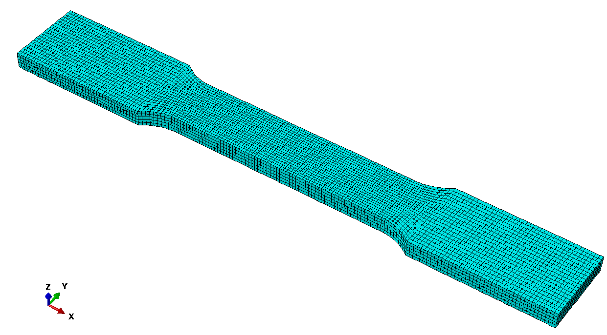

Mode I tension dynamic with fracture
Import the package:
using PeridynamicsRead and convert the Abaqus FEM mesh of a tensile test:
# insert your correct path to the downloaded mesh file!
pc = read_inp(joinpath(@__DIR__, "..", "assets", "TensileTestMesh.inp"))
Do not allow failure in the entire point cloud:
pc.failure_flag .= falseDefine a bond-based material with
- Horizon $\delta = 0.01\,\mathrm{m}$
- Density $\rho = 2700\,\mathrm{kg}\,\mathrm{m}^{-3}$
- Youngs modulus $E = 70 \times 10^9 \, \mathrm{Pa}$
- Griffith's parameter $G_c = 100 \, \mathrm{N} \, \mathrm{m}^{-1}$
mat = BBMaterial(; horizon=0.01, rho=2700, E=70e9, Gc=100)As loading condition for the specimen, a constant velocity of $0.6 \, \mathrm{m}\,\mathrm{s}^{-1}$ in $x$-direction is set for the bottom and top. Note, that element sets defined in Abaqus are converted to point_sets of the PointCloud.
bcs = [
VelocityBC(t -> -0.6, pc.point_sets["bottom"], 1),
VelocityBC(t -> 0.6, pc.point_sets["top"], 1),
]We set the number of time steps for the Velocity Verlet algorithm to 500 time steps.
vv = VelocityVerlet(500)The results of our analysis should be saved in the directory "results/TensileTestDynamic" every 10'th time step.
name = "TensileTestDynamic"
path = joinpath("results", name)
!ispath(path) && mkpath(path) # create the path if it does not exist
es = ExportSettings(path, 10)Run a single body analysis:
job = PDSingleBodyAnalysis(name=name, pc=pc, mat=mat, bcs=bcs, td=vv, es=es)submit(job) (Visualization made with ParaView)
(Visualization made with ParaView)